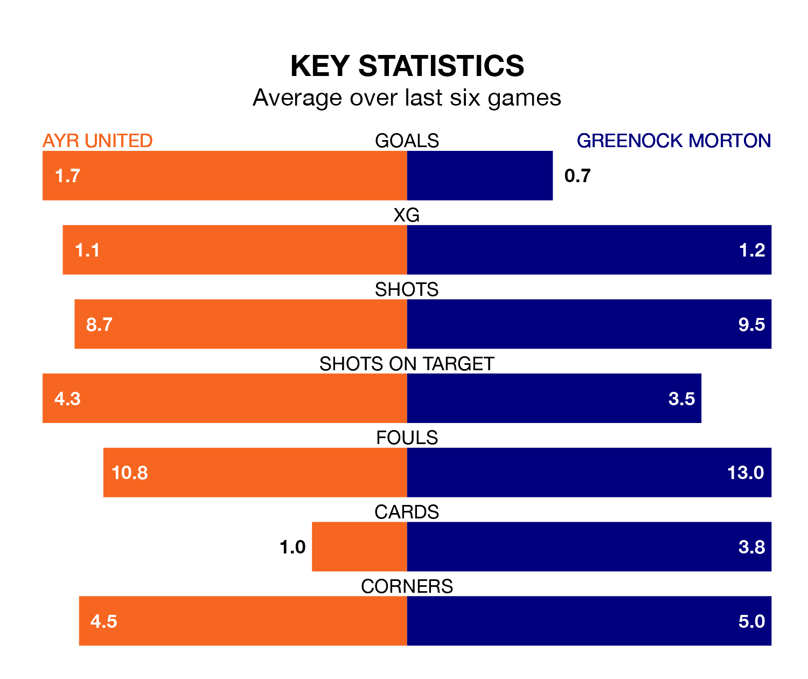

Ayr United face a challenge to maintain their high-scoring form at home against a tight Greenock Morton defence on Tuesday.
With 44 goals in 31 games, Ayr are the fourth-highest scorers in the Championship ahead of the 7.45pm kick-off at Somerset Park.
They face a Ton side who have scored 38 in 31 matches, but conceded only 37 goals, putting them joint-third among the league's tightest defences – only Dundee United and Airdrieonians have conceded fewer goals.
Ayr are in mixed form in the Championship, with three wins and three losses from their last six games.
With a win and five losses over that period, Greenock Morton's form is much worse – they have taken three points from 18, compared to United's nine.
In the last 10 years, Ayr and Greenock Morton have played each other on 31 occasions. Ayr won 10 of them, Greenock Morton nine, and they drew 12 times.
On average, the Honest Men scored 1.4 goals and the Ton 1.3 in those matches.
Their last meeting was on January 2, when Greenock Morton won 3-0 at home.
In Ryan Mullen, the Ton can rely on one of the league's safest pair of hands. He has kept eight clean sheets in his 18 appearances this season, and only two other 'keepers – Dundee United's Jack Walton and Airdrieonians's Joshua Rae – have been able to prevent the opposition scoring on more occasions in the Championship.
In the Honest Men's net, Charlie Albinson has four clean sheets in 18 games. He has conceded a goal every 59 minutes, more than twice as often as the 131 minutes between goals for Mullen.
The hosts are seventh in the table after 31 games, of which they have won 11 and drawn five, earning 38 points.
The away team are one place ahead of Ayr in sixth, with 11 wins and seven draws putting them on 40 points.
Ayr's last match was on Saturday, a 2-1 loss against Raith Rovers.
Greenock Morton lost 3-1 against Airdrieonians last time out, also on Saturday, with Michael Garrity on the scoresheet.
Tuesday's match will be refereed by Iain Snedden, who has taken charge of nine Championship games so far this season, issuing one red card and booking 41 players. He has awarded four penalties.
The last Ayr game Snedden refereed was a 2-1 away win against Inverness CT on March 16. His last Greenock Morton match was their 3-2 win away at Dundee United on January 6.
Updated: 14:47 (UTC), 09/04/24